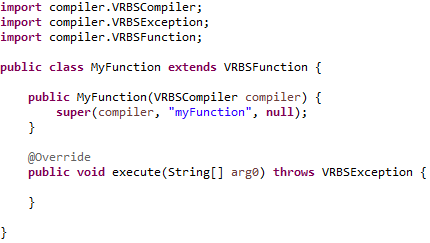
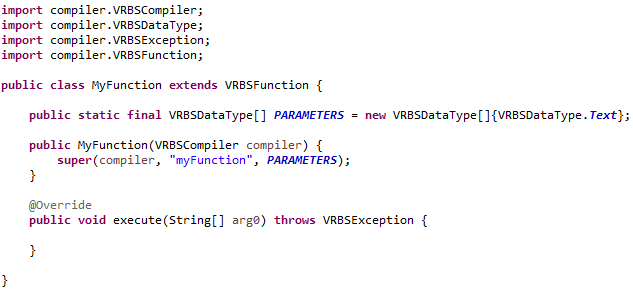
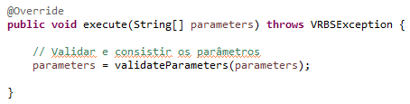
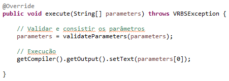
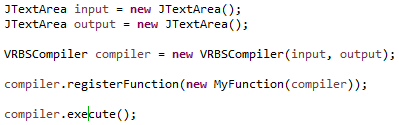
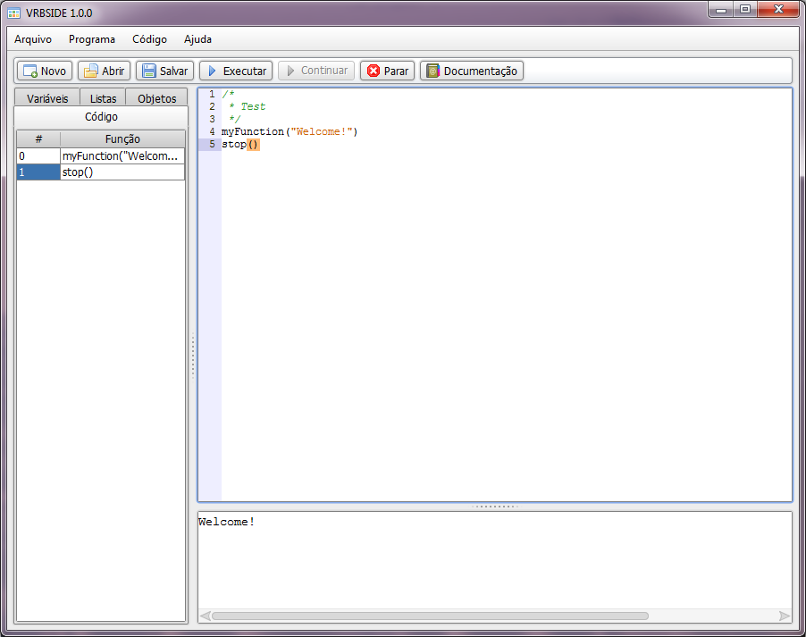
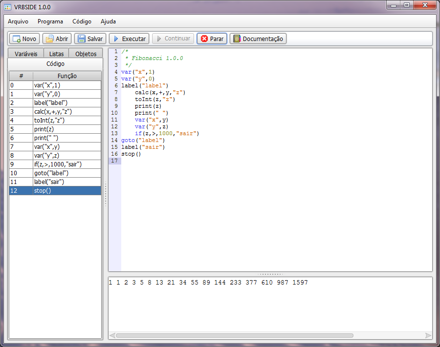

VRBS
A linguagem de Script VRBS é uma linguagem baseada em funções, onde cada função tem sua ação. Por exemplo, para criar uma estrutura de repetição não serão utilizadas palavras reservadas, más sim, funções. A linguagem tem foco em fornecer a possibilidade de customização de um sistema para o cliente, como a linguagem LUA. Ela também é recomendada para aprendizado de programação, por ser uma linguágem de script simples estrutural.
Biblioteca
A Linguagem foi desenvolvida pela tecnologia Java, e pode ser adicionada como uma biblioteca em qualquer aplicação java. Ela oferece o desenvolvimento de funções customizadas com ações definidar pelo próprio desenvolvedor para integração.
Aplicação
Para realizar a execução do compilador no aplicação, precisamos ter uma instância de
VRBSCompiler informando em seu construtor os campos de
entrada de código e saída.
VRBSCompiler compiler = new VRBSCompiler(input, output);
Para realizar a execução do código de entrada, usamos o método
execute().
compiler.execute();
Para mais informações sobre os recursos disponíveis no compilador, consulte o javadoc dentro dos fontes do VRBS.
Função Customizada
A biblioteca oferece uma interface para criação de funções customizadas. A interface tem por obrigatoriedade a implementação de um método
executar() onde o mesmo tem a ação de executar a função customizada quando a mesma for chamada. Também oferece tratamento de "n" parâmetros
padrão. Após a classe da função ser criada, ela deve ser registrada no compilador para estar disponível para uso. Para registrar a função, é
necessária a utilização do método registerFunction(função). Abaixo segue um passo a passo para criação de uma função.
Passo 1
Criar uma classe java na qual será a função a ser criada, extendendo da classe VRBSFunction.

Passo 2
Estabelecer o array de tipo de parâmetros que a função irá aceitar. O array deve ser do tipo VRBSDataType. Por exemplo, caso necessitaremos criar uma função que aceite 2 parâmetros, um numérico e outro string, iremos ter o seguinte:
VRBSDataType[] parameters = {VRBSDataType.Number, VRBSDataType.Text};

Passo 3
Iniciar a execução da função. Para consistir os parâmetros passados na chamada da função (Validar, obter o valor das variáveis, etc...) utilizamos um método da classe pai (VRBSFunction) chamado
validateParameters(parametros) que retorna os parâmetros processados.
parameters = validateParameters(parameters);

Passo 4
Agora vamos criar a execução da função conforme os parâmetros passados. Já que temos somente 1 parâmetro do tipo texto nesta função, vamos imprimir o valor deste parâmetro no campo de saída do compilador. Para isto precisamos obter o compilador (
getCompiler()) e obter o campo de saída (getOutput()).

Passo 5
Precisamos registrar a função para que ela fique disponível para uso no compilador. O método para registro é
registerFunction(instância).

Passo 6
Feito! Agora podemos utilizar nossa função customizada no script VRBS.

IDE
VRBS se trata de uma biblioteca que pode ser importada em qualquer software em java, más também existe a VRBS IDE para facilitar a execução de testes de funções nativas da linguagem e até mesmo o aprendizado em linguagens de programação estruturadas funcionais.

A IDE tem suporte a análise em tempo real das variáveis, listas e objetos definidos em execução. Também contém a possibilidade de acompanhamento do código.
Sintaxe
A sintaxe da linguagem é muito simples. Todas as funções tem um padrão de estilo das linguagem do dia a dia como (C, C++, C#, Java, ...). Comentários também estão presentes para melhor Documentação do código. Abaixo segue um exemplo do código em VRBL:
// Programa de demonstração
var("x",10)
var("y",10)
calc(x,"+",y,"z")
print(z)
Comentários
O compilador ignora comentário de linha e de múltiplas linhas, assim como qualquer texto inserido no código sem se tratar de uma função.
Comentário de linha:
// Programa de demonstração
Comentário de múltiplas linhas:
/*
* Programa de demonstração
*/
Texto qualquer sem ser uma função:
Programa de demonstração
Funções Nativas
Por se tratar de uma linguagem baseada em funções, todas as instruções seguem o mesmo padrão de chamada, no formato "nome_da_função(par1, par2, parN)". Assim como funções de cálculos, as principais instruções como "if, var, goto" são também funções.
var
Esta função tem como ação a definição de uma variável, ou a atribuição de uma valor a uma variável pré existente. A instrução
var(1, 2) tem o seguinte layout:
1- Nome da variável
2- Valor
var("x",10)
var("y","Hello World !!")
var("x",50)
A função print irá mostrar um valor estático ou um valor de uma variável no console. A instrução
print(1) tem o seguinte layout:
1- Valor
var("x",10)
print(x)
print("Hello World !!")
printLn
Tem a mesma ação que a função
print porém irá mostrar o valor quebrando uma linha. A instrução
printLn(1) tem o seguinte layout:
1- Valor
var("x",10)
printLn(x)
printLn("Hello World !!")
calc
Esta função é responsável por realizar diversos cálculos matemáticos, como soma, divisão, multiplicação, subtração e módulo. A instrução
calc(1, 2, 3, 4) tem o seguinte layout:
1- Valor
2- Operador Aritmético
3- Valor
4- Variável
var("x",10)
var("y",5)
calc(x,"+",y,"z")
sin
Irá calcular o valor de Seno do parâmetro e atribuirá o resultado a variável especificada. A instrução
sin(1, 2) tem o seguinte layout:
1- Valor
2- Variável
sin(3.14,"x")
cos
Irá calcular o valor de Cosseno do parâmetro e atribuirá o resultado a variável especificada. A instrução
cos(1, 2) tem o seguinte layout:
1- Valor
2- Variável
cos(3.14,"x")
inc
Incrementará o valor do parâmetro e atribuirá o resultado a variável especificada. A instrução
inc(1, 2) tem o seguinte layout:
1- Valor
2- Variável
var("x",10)
inc(x,"x")
dec
Decrementará o valor do parâmetro e atribuirá o resultado a variável especificada. A instrução
dec(1, 2) tem o seguinte layout:
1- Valor
2- Variável
var("x",11)
dec(x,"x")
toInt
Irá converter o valor do parâmetro em um valor inteiro e atribuirá o resultado a variável especificada. A instrução
toInt(1, 2) tem o seguinte layout:
1- Valor
2- Variável
var("x",2.0)
toInt(x,"x")
toFloat
Irá converter o valor do parâmetro em um valor decimal e atribuirá o resultado a variável especificada. A instrução
toFloat(1, 2) tem o seguinte layout:
1- Valor
2- Variável
var("x",2)
toFloat(x,"x")
Pow
Calcula a potência conforme parâmetros. A instrução
pow(1, 2, 3) tem o seguinte layout:
1- Valor
2- Expoente
3- Variável
var("x",2)
toFloat(x,"x")
label
Esta função serve somente para marcar um trecho do código e servir como alvo para outras funções de controle de cursor. A instrução
label(1) tem o seguinte layout:
1- Nome do Label
label("label 1")
goto
Movimenta o cursor para o label especificado. A instrução
goto(1) tem o seguinte layout:
1- Label
goto("label 1")
label("label 1")
check
Irá checar o valor de um parâmetro conforma a intrução lógica parametrizada. Caso o resultado for verdadeiro, a linha abaixo da instrução
check será executada, caso for falsa, a linha abaixo será ignorada. A instrução
check(1, 2, 3) tem o seguinte layout:
1- Valor
2- Operador Lógico
3- Valor
var("x",5)
check(x,"=",5)
goto("label 1")
goto("label 2")
line
Movimenta o cursor para a linha desejada. (Obs: Recomendamos o uso da instrução
goto pois o número da linha no código pode ser diferente do número da linha da sequância de processamento). A instrução
line(1) tem o seguinte layout:
1- Número da Linha
line(10)
if
Movimenta o cursor ao label especificado caso a condição for verdadeira. A instrução
if(1, 2, 3, 4) tem o seguinte layout:
1- Valor
2- Operador Lógico
3- Valor
4- Label
var("x",7)
var("y",5)
if(x,">=",y,"label")
ifElse
Movimenta o cursor ao label especificado caso a condição for verdadeira. Caso for falsa, movimenta o cursor para o segundo label especificado. A instrução
ifElse(1, 2, 3, 4, 5) tem o seguinte layout:
1- Valor
2- Operador Lógico
3- Valor
4- Label (Condição Verdadeira)
5- Label (Condição False)
var("x",7)
var("y",5)
ifElse(x,">=",y,"verdadeiro","falso")
case
Movimenta o cursor ao label especificado caso o valor for igual ao valor de comparação. A instrução
case(1, 2, 3) tem o seguinte layout:
1- Valor
3- Valor
4- Label
var("x",2)
case(x,1,"label 1")
case(x,2,"label 2")
case(x,3,"label 3")
list
Cria uma lista com o nome especificado. A instrução
list(1) tem o seguinte layout:
1- Nome da Lista
list("Minha Lista")
insert
Adiciona um valor para dentro da lista especificada. A instrução
insert(1, 2) tem o seguinte layout:
1- Valor
2- Lista
insert(10,"Minha Lista")
insert("Hello World !!","Minha Lista")
get
Retorna o valor da posição da lista especificada. A instrução
get(1, 2, 3) tem o seguinte layout:
1- Posição
2- Lista
3- Variável
get(2,"Minha Lista","x")
remove
Remove uma posição da lista especificada. A instrução
remove(1, 2) tem o seguinte layout:
1- Posição
2- Lista
remove(5,"Minha Lista")
size
Retorna o tamanho da lista especificada. A instrução
size(1, 2) tem o seguinte layout:
1- Lista
2- Variável
size("Minha Lista","x")
input
Exibe uma caixa de diálogo com um campo de entrada ao usuário. A instrução
input(1, 2) tem o seguinte layout:
1- Texto a ser exibido
2- Variável
input("Insira o valor de x:","x")
msg
Exibe uma caixa de diálogo com uma mensagem ao usuário. A instrução
msg(1) tem o seguinte layout:
1- Texto a ser exibido
msg("Hello World !!")
clear
Limpa o console.
clear()
delay
Espera um determinado tempo para executar a próxima instrução. A instrução
delay(1) tem o seguinte layout:
1- Tempo de espera em milisegundos
delay(1000)
compilerDelay
Altera o tempo de espera de execução de cada função do compilador. A instrução
compilerDelay(1) tem o seguinte layout:
1- Tempo de espera em milisegundos
compilerDelay(1000)
stop
Finaliza a execução do programa.
stop()
exit
Finaliza a execução do programa e fecha a IDE.
exit()
concat
Realiza a concatenação de duas variáveis e adiciona o valor concatenado a uma variável especificada. A instrução
concat(1, 2, 3) tem o seguinte layout:
1- Valor
2- Valor
3- Variável
concat("Hello ","World !!","x")
print(x)
import
A instrução import realiza a importação de uma código VRBL de outro arquivo. Esta instrução é executada durante a compilação diferente das outras funções. A instrução
import(1) tem o seguinte layout:
1- Diretório do arquivo (Não pode ser uma variável pois as variáveis só serão criadas após a compilação)
import("C:/programa.vrbl")
length
Retorna o comprimento de um valor e adiciona este comprimento a variável especificada. A instrução
length(1, 2) tem o seguinte layout:
1- Valor
2- Variável
length("Hello World","x")
charAt
Retorna o caracter da posição de um valor e adiciona este caracter a variável especificada. A instrução
charAt(1, 2, 3) tem o seguinte layout:
1- Posição
2- Valor
3- Variável
charAt(0,"Hello World","x")
showIde
Mostra a interface da IDE.
showIde()
hideIde
Oculta a interface da IDE.
hideIde()
fileRead
Realiza a leitura do conteúdo de um arquivo. A instrução
fileRead(1, 2) tem o seguinte layout:
1- Diretório do arquivo
2- Variável
var("file","C:/texto.txt")
fileRead(file,"content")
print(content)
fileWrite
Realiza a escrita de um conteúdo em um arquivo. A instrução
fileWrite(1, 2) tem o seguinte layout:
1- Conteúdo
2- Diretório do arquivo
var("file","C:/texto.txt")
fileWrite("Hello World !!", file)
asciiEncode
Obtém o código ASCII do primeiro caractér do valor especificado. A instrução
asciiEncode(1, 2) tem o seguinte layout:
1- Valor
2- Variável
asciiEncode("a","x")
print(x)
asciiDecode
Obtém o caractér do código ASCII especificado. A instrução
asciiDecode(1, 2) tem o seguinte layout:
1- Valor
2- Variável
asciiDecode(97,"x")
print(x)
random
Retorna um número decimal aleatório a uma variável. A instrução
random(1) tem o seguinte layout:
1- Variável
random("x")
print(x)
randomInt
Retorna um número inteiro aleatório a uma variável. A instrução
randomInt(1) tem o seguinte layout:
1- Variável
randomInt("x")
print(x)
randomIntLimit
Retorna um número inteiro aleatório a uma variável até determinado limite. A instrução
randomIntLimit(1, 2) tem o seguinte layout:
1- Limite
1- Variável
randomIntLimit(10,"x")
print(x)
obj
Cria um objeto com o nome especificado. A instrução
obj(1) tem o seguinte layout:
1- Nome do Objeto
obj("myObject")
setAttribute
Atribui o valor a um atributo do objeto especificado. A instrução
setAttribute(1, 2, 3) tem o seguinte layout:
1- Nome do Atributo
2- Valor
3- Nome do Objeto
setAttribute("name","Peter","myObject")
getAttribute
Retorna o valor de um atributo do objeto especificado. A instrução
getAttribute(1, 2, 3) tem o seguinte layout:
1- Nome do Atributo
2- Nome do Objeto
3- Variável
getAttribute("name","myObject","x")
qtdVar
Retorna o número de variáveis definidas. A instrução
qtdVar(1) tem o seguinte layout:
1- Variável
qtdVar("x")
qtdList
Retorna o número de listas definidas. A instrução
qtdList(1) tem o seguinte layout:
1- Variável
qtdList("x")
qtdObj
Retorna o número de objetos definidos. A instrução
qtdObj(1) tem o seguinte layout:
1- Variável
qtdObj("x")
getVarName
Retorna o nome da variável pelo seu índice. A instrução
getVarName(1, 2) tem o seguinte layout:
1- Índice
2- Variável
getVarName(0,"x")
getListName
Retorna o nome da lista pelo seu índice. A instrução
getListName(1, 2) tem o seguinte layout:
1- Índice
2- Variável
getListName(3,"x")
getObjName
Retorna o nome do objeto pelo seu índice. A instrução
getObjName(1, 2) tem o seguinte layout:
1- Índice
2- Variável
getObjName(2,"x")
break
Trava o cursor na linha em processamento e aguarda o usuário selecionar a opção continuar. Esta função é mais utilizada para fins de depuração.
break()
cmd
Executa um comando no Prompt. A instrução
cmd(1) tem o seguinte layout:
1- Comando
cmd("calc")